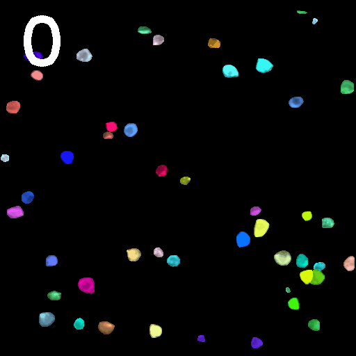
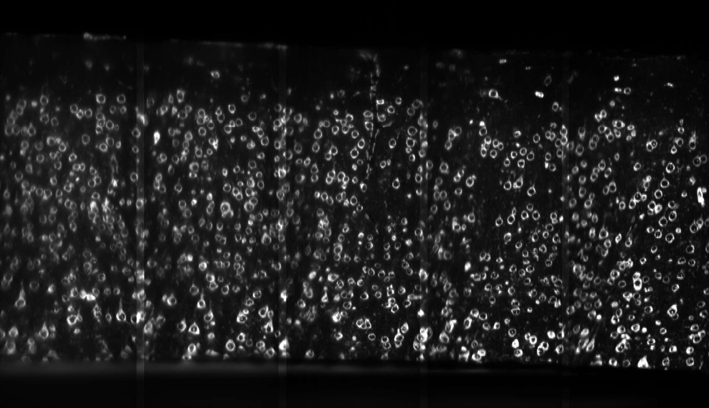
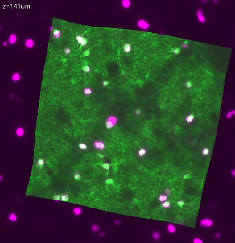
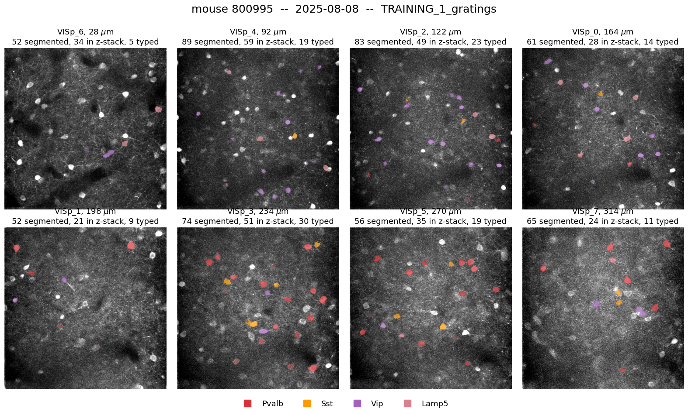
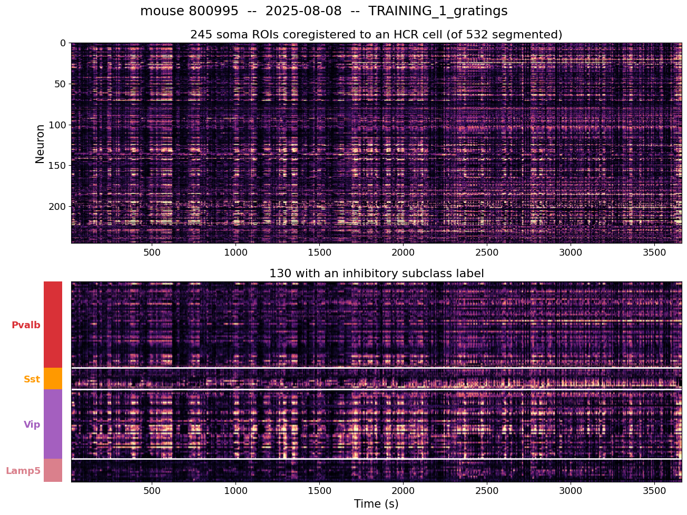

Linking Ophys and Transcriptomics#
The Visual Learning dataset consists of two independent measurements of the same tissue. In vivo two-photon imaging records the activity of inhibitory neurons across eight planes in primary visual cortex , every day, through the entire training procedure. After the in vivo experiment is complete, spatial transcriptomics measures the expression of 22 or 27 genes in a tangential section of the same brain. Neither measurement is useful for the purpose of this dataset without the other: the imaging says what a neuron did but not which type it is, and the gene expression says which type a cell is but not what it did.
This page describes the procedure that connects them, the identifiers it produces, and how many neurons survive it.
Why linking is hard#
The two measurements are made in different physical states of the tissue and at different scales. The imaging is made in a living animal, through a cranial window, one 400 × 400 µm field of view at a time. The transcriptomics is made in a fixed, cleared and expanded section, imaged as a mosaic of tiles on a lightsheet microscope. Between the two, the tissue has been perfused, sectioned, chemically expanded, and mounted in a different orientation.
Matching a neuron across that gap cannot be done in one step. The registration proceeds through an intermediate volume: a high-resolution structural z-stack of the same cortical volume, acquired in vivo at the end of the experiment, which shares its imaging modality with the functional planes on one side and its fluorophore with the lightsheet volume on the other.
Registration steps#
Across session matching for each plane#
Each session is segmented independently, so the same neuron produces a different set of pixels with a different index in every session it appears in. ROICaT matches ROI masks across sessions within each imaging plane, on the basis of mask shape and position, and assigns each resulting neuron a single identifier that is stable across every session of that mouse. The result is one unified set of masks per plane rather than one set per session per plane.

Fig. 29 The same field of view tracked across sessions#
Imaging planes into the structural volume#
At the end of the experiment a high-resolution structural z-stack is acquired in vivo over roughly 400 µm of cortex, containing all eight functional imaging planes within it. The unified masks from each plane are matched into this volume by spatial overlap. The z-stack is the common reference frame: it is the entity that a functional ROI and a transcriptomic cell can both be matched to, even though they cannot be matched directly to each other.
Side view of 2P z-stack:
Structural volume to the lightsheet volume#
The structural volume is then aligned to the lightsheet volume acquired from the
tangential section of the same brain. This step works at cellular resolution
because it is a GCaMP-to-GCaMP registration: the same cells are
labeled by the same fluorophore in both volumes, so the alignment is driven by
matching individual cell bodies rather than by matching tissue landmarks. GFP
is in the gene panel for exactly this reason.
Side view of lightsheet volume:

Fig. 30 The lightsheet volume of the tangential section#
Validating Ophys-mFISH co-registration#
The figure below sweeps through cortical depth, from the top down, with the two volumes overlaid — the two-photon structural stack in green, the lightsheet volume in magenta. Cells that appear white are present in both.
Top down view of 2P z-stack (green) aligned to lightsheet volume (purple):

Fig. 31 Sweeping through depth with both volumes overlaid#
The procedure is semi-automated and ends in a manual quality control step to verify the matches.
The coregistration identifiers#
Four identifiers appear in the linked data, and they have different scopes.
Identifier |
Scope |
What it names |
|---|---|---|
|
one session, one plane |
one ROI mask, as segmented in that plane on that day |
|
all sessions of one mouse |
a neuron, tracked across days |
|
one mouse |
the cell in the structural z-stack |
|
one mouse |
the transcriptomic cell, and the key into the gene expression table |
The distinction between the first two is the one that matters most. A neuron
imaged on Monday and again on Tuesday is the same cell but a different row in
each day’s data: unique_roi_id names the row, unique_roicat_id names the
cell. The relationship is many unique_roi_id to one unique_roicat_id , and
how many varies per neuron, because a neuron is not detected in every session.
The number of sessions a neuron appears in ranges from one to the full length of
that animal’s experiment.
The chain that attaches a cell type to a trace runs across these in order:
unique_roi_id → unique_roicat_id → resolved_cz_stack_id → hcr_id → subclass
(ROI mask, (the neuron, (the structural (the HCR (cell type)
one day) across days) stack cell) cell)
One further detail is worth knowing, because it explains why two z-stack columns
exist. Matching ROIs to stack cells by spatial overlap is done independently in
each session, which leaves ambiguities — the same neuron matched to different
stack cells on different days. Resolution uses unique_roicat_id to settle
them, requiring that all ROIs belonging to one neuron map to a single stack
cell. resolved_cz_stack_id is the outcome of that step and cz_stack_id is
the raw per-session match that preceded it.
How many neurons survive#
The populations are nested and shrink at every step. Counted as neurons rather than as per-session segmentations, across 124 coregistered sessions from all six mice:
Stage |
Neurons |
|---|---|
in the coregistration table |
7,882 |
matched into the structural z-stack |
3,885 |
matched to a transcriptomic cell |
2,827 |
The meaningful success rate is the last step against the one before it. An imaged neuron can only reach its transcriptome through a stack cell, so the z-stack population is the one that could have been matched at all: 2,827 of 3,885, or 73%. Measured against all 7,882 coregistered neurons the same number reads as 36%, but that folds in a second and separate question — which imaged neurons reached the stack in the first place.
Per mouse the rate against the z-stack runs from 74% to 87%, with one exception. Mouse 782149 is at 38%, because its tangential section was roughly 200 µm rather than 350–400 µm and therefore covers only layers 1 through 3. Nothing below about 160 µm in that animal has a transcriptomic match. This is a property of the sectioning, not a registration failure, and the deep planes of that mouse should not be read as evidence that deep neurons fail to coregister.
A single session shows the same funnel at a smaller scale. In one TRAINING_1
session from mouse 800995, of 532 segmented ROIs across the eight planes, 393
were in the coregistration table, 301 matched a stack cell, 247 matched a
transcriptomic cell, and 131 carried an inhibitory subclass label.

Fig. 32 Coregistered inhibitory neurons across imaging planes#
Why neurons drop out#
Several independent causes contribute, and they act at different steps.
Only eight planes carry functional data. The structural volume spans roughly 400 µm continuously, while the functional imaging samples eight thin planes within it. Most cells in the structural volume were never imaged, so the majority of the loss between the stack and the functional data is geometric rather than a failure of anything.
Segmentation depends on activity. A neuron that was silent, or nearly so, during a session is not segmented in that session. Cell type is not conditioned on activity, but the presence of a functional ROI is.
Imaging quality degrades with depth. A cross-modal match requires a good segmentation in both modalities, and two-photon signal-to-noise falls off with depth. Coverage thins gradually rather than stopping at a cutoff: roughly 69% of ROIs above 150 µm receive a transcriptomic match, against roughly 56% below 270 µm.
A neuron has to be visible in GCaMP to be matched at all. The functional imaging sees only GCaMP-expressing cells, the structural z-stack is a GCaMP volume, and the registration into the lightsheet volume is GCaMP-to-GCaMP. A neuron that expresses little or no reporter, or that was not active enough to be visible during the z-stack acquisition, is therefore absent from the match on both counts. Neither condition is met uniformly across inhibitory subclasses, which makes this a source of biased rather than random loss — see below.
Coregistration also selects for somas without being asked to. The stack match is a spatial-overlap test against cell bodies, so a dendritic segment has little to overlap with: 97% of tracked neurons are somas, rising to 99% of those matched to a transcriptomic cell.
The composition of the linked population#
The neurons carrying both an activity trace and a subclass label are not a random sample of either dataset. Two structural biases are large enough to matter when planning a comparison.
The subclasses sit at different depths. LAMP5 and VIP neurons are superficial, SST and PV neurons are deeper. Median imaging depth of the neurons carrying a subclass label, across the dataset:
LAMP5 |
VIP |
SST |
PV |
|---|---|---|---|
110 µm |
124 µm |
228 µm |
239 µm |
The effect on composition is substantial: above 90 µm the labeled population is roughly 86% LAMP5 and VIP, while below 210 µm it is 60–70% PV. A comparison between VIP and PV neurons is therefore also, to a large extent, a comparison between superficial and deep cortex. Note that these are imaging depths in microns rather than layer assignments — this dataset carries no layer label, and depth alone does not provide one, since layer boundaries vary between animals and a plane’s depth is a nominal setting.
SST neurons are scarce in the linked population but not in the tissue. Among coregistered neurons carrying a subclass label, across all six mice:
Mouse |
PV |
SST |
VIP |
LAMP5 |
Total |
|---|---|---|---|---|---|
782149 |
18 |
7 |
69 |
56 |
150 |
788406 |
157 |
29 |
69 |
57 |
312 |
790322 |
147 |
47 |
107 |
42 |
343 |
800792 |
102 |
16 |
101 |
74 |
293 |
800995 |
96 |
20 |
56 |
38 |
210 |
804363 |
129 |
24 |
106 |
67 |
326 |
All |
649 |
143 |
508 |
334 |
1,634 |
Among the inhibitory cells of mouse 800995’s full transcriptomic table, SST is the second most common subclass, but in the coregistered set it is the least common. Coregistration depends on the cell expressing GCaMP in vivo and being active during the z-stack acquisition, and either could cause the loss of SST cells in the coregistered set. Evidence indicates that expression bias is at play, as many SST positive cells in the full HCR lightsheet volume have very low or no GFP transcripts.
The consequence for planning is that the transcriptomic data gives a very different picture of subclass abundance than the coregistered subset does, and it is the counts in the table above — not the tissue proportions — that constrain what can be asked of the physiology.
What the data can be used for#
Once a neuron carries both an identity and a trace, its subclass can be applied to its activity in every session it was recorded in — which, for neurons tracked across the experiment, means from the animal’s first naive session through expert performance, novel stimulus exposure, and extinction. Because all four subclasses are recorded simultaneously in the same field of view, their activity can also be related to one another within a session rather than compared across animals.

Fig. 33 Activity of coregistered neurons sorted by subclass#
Cell identity does not have to enter an analysis as a discrete label. Every coregistered neuron carries a full expression profile across the measured genes, so activity can be related to graded expression directly, either instead of or in addition to grouping by subclass.
The gene expression measurements themselves, the gene panel, and how the subclass labels are derived are described in Visual Learning Transcriptomics . The physiology and the experimental design are described in Visual Learning Ophys .